정보통신기사(구) (2002-05-26 기출문제)
1과목: 디지털 전자회로
1. M/S 플립플롭회로는 어떤 현상을 해결하기 위한 플립플롭회로인가?
- Delay현상
- Race현상
- Set현상
- Toggle현상
(정답률: 알수없음)

2. 그림과 같은 이상 변압기에 반파정류회로를 구성하여 스위치 S를 개방하였다면 이때 C의 양단 AB에 충전된 전압은 얼마인가?
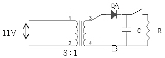
- 약45[V]
- 약52[V]
- 약60[V]
- 약74[V]
(정답률: 알수없음)
3. Ic=12[mA]인때 VCE=6[V]이고, β=100, VBE=0.7[V]라고 하고 역포화 전류(reverse saturation current)를 무시하는 경우 Rc를 구하시오.
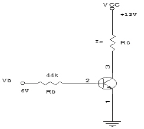
- Rc=1.5[㏀]
- Rc=1[㏀]
- Rc=500[Ω]
- Rc=100[Ω]
(정답률: 알수없음)
4. 그림과 같은 연산증폭기를 이용한 Quadrature발진회로에서 출력되는 발진주파수 fo는? (단, R1=200[㏀], R2=R3=150[㏀], C1=C2=C3=0.001[㎌])
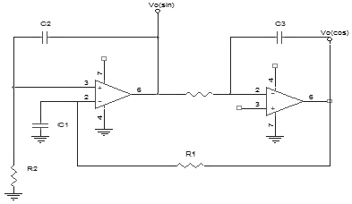
- 1.06[㎑]
- 2.24[㎑]
- 3.56[㎑]
- 4.48[㎑]
(정답률: 알수없음)
5. 그림과 같은 직선 검파회로에서 diagonal clipping이 생기는 이유로서 옳은 것은? (단, ma는 변조지수, Ws는 변조신호의 각주파수)
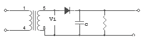
- 시정수 RC가 너무 작기 때문
- 시정수 RC가 너무 크기 때문
- RC＞1/(maㆍWs)
- RC≫1/(maㆍWs)
(정답률: 알수없음)
6. 다음의 내용 중에서 귀환형 발진기의 특징과 관계가 없는 항은?
- 귀환형 발진기에서는 입력신호가 필요하지 않다.
- 귀환형 발진기에서는 출력의 일부가 입력으로 정귀환 된다.
- 귀환형 발진기에서 종합 루프이득은 1이다.
- 귀환형 발진기에서 귀환회로에 반드시 인턱터(L)를 사용해야 한다.
(정답률: 알수없음)
7. 직력전압 부궤환을 이용한 증폭회로에서 주파수가 높으면 부궤환량이 증가되는 회로는?
- AGC
- AVC
- AFC
- ATC
(정답률: 알수없음)
8. MOS의 논리회로의 특징이 아닌 것은?
- 높은 입력 임피던스이다
- 소비전력이 적다
- 잡음여유도가 크다
- TTL과의 혼용이 매우 용이하다
(정답률: 알수없음)
9. 다음 중 NOR 게이트로 구성된 R-S 플립플롭에 대한 설명이 아닌 것은?
- S = R = 0 이면 상태 변화는 없고 처음 상태로 유지한다
- S = 0 , R = 1 일 때 Qn 이 0이면 변화가 없고 Qn이 1이면Qn+1은 0으로 reset된다
- S = 1, R = 1일 때 Qn이 0이면 Qn+1은 1로 set 되고 Qn이 1 이면변화없다
- S = R = 1 일 때 입력이 가해지면 어떤 출력이 나타날지 불확실하므로 부정상태로 금지조건이다
(정답률: 알수없음)
10. 다음 회로가 나타내는 전달특성은? (단, D는 이상적인 다이오드이다)
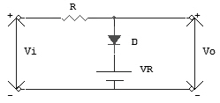
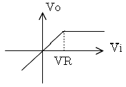
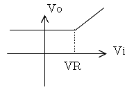
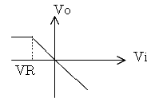
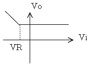
(정답률: 알수없음)
11. 다음회로의 출력은?
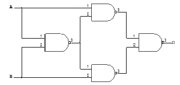
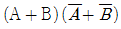
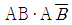
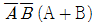
- AB
(정답률: 알수없음)
12. 다음 회로에서 Q1의 역할은? (단, Q1과 Q2의 전기력특성은 같다)
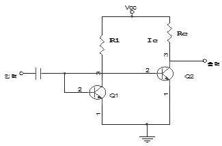
- 다이오드와 같은 작용
- 온도 보상 작용
- 높은주파수의 신호를 제거시킴
- 입력신호 증폭작용
(정답률: 알수없음)
13. 그림과 같은 ECL 회로의 논리출력은? (단, Y, Y'는 출력단자)
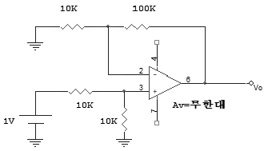
- Y: NAND Y': AND
- Y: AND Y': NAND
- Y: NOR Y': OR
- Y: OR Y': NOR
(정답률: 19%)
14. 아래 반전증폭회로의 출력전압은 얼마인가? (단, 연산증폭기의 개방이득을 ∞라고 본다.)(문제 오류로 그림이 없습니다. 정답은 1번입니다. 정확한 그림 내용을 아시는분께서는 자유게시판 또는 관리자 메일로 부탁 드립니다.)
- 5.5[V]
- 10.5[V]
- 11[V]
- 21[V]
(정답률: 28%)
15. 그림과 같은 교류적 등가회로의 표시되는 발진회로의 발진주파수는?
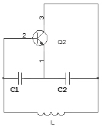
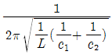
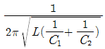
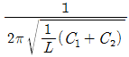
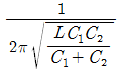
(정답률: 25%)
16. FM 증폭방식으로 사용하고 저주파 증폭기에는 사용되지 않는방식은?
- AB급
- C급 푸쉬풀(push pull)
- B급
- A급푸쉬풀(push pull)
(정답률: 알수없음)
17. 그림과 같은 회로에서 입력에 Vi = 50 sin ω t[V]인 정현파를 가했을 때 출력 Vo의 파형으로 옳은 것은? (단, D1, D2의 항복전압은 10[V]이다)
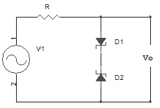
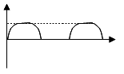
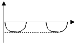
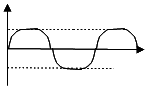
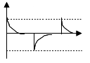
(정답률: 알수없음)
18. 다음 중 환형 계수기(ring counter)와 같은 것은?
- BCD 계수기
- 가역 계수기
- 시프트 레지스터
- 순환 시프트 레지스터
(정답률: 25%)
19. 입력전압이 Vi, 출력전류가 io일 때, 다음식은 출력전류와 입력전압의 비선형 관계를 표시한 식이다. 진폭변조와 관계되는 항은? (단, Ao,A1,A2,A3...... 상수이다.)
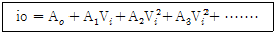
- Ao 항이다.
- A1Vi 항이다.
- A2Vi2항이다.
- A3Vi3 항이다.
(정답률: 알수없음)
20. 그림과 같은 P-MOS 게이트 기능을 나타내는 논리식은? (단, 부논리이다)
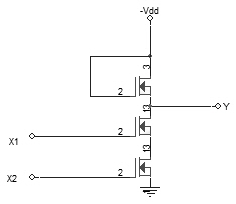
- Y= X1+ X2
- Y= X1ㆍ X2
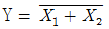
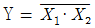
(정답률: 알수없음)
2과목: 정보통신 시스템
21. 64개 양자화 레벨(quantization level)을 사용하는 대신 512개 양자화 레벨을 사용하고 싶다. 이 양쪽 시스템이 동일 잡음면역(noise immunity)을 처리 해야 한다고 하면 찬넬 대역폭을 얼마큼 증가 시켜야 하는가?
- 4/3
- 3/4
- 3/2
- 2/3
(정답률: 10%)
22. 사용하는 네트워크의 정량적인 평가척도는 어느 것인가?
- 노드(Node)수
- 응답시간
- 통신장비
- 통신소프트웨어
(정답률: 50%)
23. 패킷 교환방식(packet switching)중 틀리는 것은?
- 트래픽 용량이 큰 경우에 유리하다.
- 축적 교환방식의 일종이다.
- 데이터 단위의 길이가 제한된다.
- 대체 경로를 선택할 수 있으나 네트워크의 신뢰성이 낮다.
(정답률: 알수없음)
24. 광파이버 전송로에 대한 설명으로 부적절한 것은?
- 기존 구리 전송로에 비하여 전송 대역폭이 넓다.
- 기존 구리 전송로에 비하여 중계 전송거리가 길다.
- 전자파 간섭에 강하다.
- 기존 구리 전송로에 비하여 도청이 용이하다.
(정답률: 알수없음)
25. 다음 DATA 전송제어문자의 내용이 적합하지 않은 것은?
- SOH : 정보 메시지 해당의 시작 표시
- STX : 본문의 시작 표시
- ETX : 본문의 종료 표시
- ETO : 전송의 종료 표시
(정답률: 알수없음)
26. 에러제어방식중 ARQ(Automatic Repeat Request)방식은 어떤 방식인가?
- 패리티검사 코드방식
- 에러검출후 재전송방식
- 전진에러 수정방식
- 루프 혹은 에코검사방식
(정답률: 60%)
27. 기존 전화망에 적용되고 있는 교환(switching)방식은 무엇인가?
- ATM 교환
- 메시지 교환
- 패킷 교환
- 회선 교환
(정답률: 알수없음)
28. ITU-T의 V시리즈는 무엇을 대상으로 하는 표준안인가?
- 전화망을 통한 데이터통신
- 전송,신호방식에 관한 데이터통신
- 망간 호접속에 관한 데이터통신
- 메시지 처리에 관한 데이터통신
(정답률: 29%)
29. 개방시스템(Open-Sysem)에 대한 설명 중 틀린 것은?
- 응용프로그램이 수정없이 모든 시스템에 이식되어야 한다.
- 원격의 상잉한 시스템이 상이한 응용프로그램과 연동이 용이해야 한다.
- 사용자접속에 있어 일정스타일로 호환성이 유지되어야 한다.
- 특정 소프트웨어나 하드웨어에 종속되지 않는 시스템을 말한다.
(정답률: 알수없음)
30. B-ISDN의 프로토콜에서 AAL에 대한 설명으로 맞는 것은?
- 셀단위의 스위칭을 담당하는 계층이다.
- AAL type 1은 회선 emulation에 적합하다.
- AAL type 2에서는 47 octet 이하의 짧은 데이터의 전송만 지원한다.
- AAL type 3/4는 신호(signaling)에 사용된다.
(정답률: 알수없음)
31. 서비스 프리미티브의 기본 기능이 아닌 것은?
- 요구
- 응답
- 기동
- 확인
(정답률: 알수없음)
32. 다음중 대화식 통신에 사용하기에는 너무 느려서 적당하지 않은 교환방식은?
- 회선교환방식
- 데이터그램 패킷교환방식
- 메시지교환방식
- 가상회선 패킷교환방식
(정답률: 알수없음)
33. 메시지에 주소를 부여하고 통신 노드들간의 경로 설정 및 메시지 흐름 제어를 하는 계층은?
- 네트워크 계층
- 세션 계층
- 전송 계층
- 프리젠테이션 계층
(정답률: 알수없음)
34. 종합정보통신망(ISDN)이 제공하는 서비스로 옳은 것은?
- 베어러 서비스, 텔리 서비스, 부가 서비스
- 텔리 서비스, 네트워킹 서비스, 전달 서비스
- 전달 서비스, 부가 서비스, 세션 서비스
- 데이터 링크 서비스, 네트워킹 서비스, 응용 서비스
(정답률: 알수없음)
35. OSI 7 layer 중 data link control layer의 기능으로 볼수 없는 것은?
- 전송오류 제어기능
- text의 압축, 암호화기능
- flow 제어기능
- link의 관리기능
(정답률: 36%)
36. 디지털 교환기의 통화로망(switching network)의 가장 일반적인 구성 형태는?
- T
- T - S - T - S
- S - T - S
- T - S - T
(정답률: 알수없음)
37. 다음 설명 중 올바른 것은?
- QPSK 모뎀의 경우 보오율(baud rate)과 비트율(bit rate)은 동일하다
- TDM이란 주파수대역을 분할하여 각각의 채널로 할당하여 다중화하는 방식이다.
- CRC(Cyclic Redundancy Check)는 에러정정을 하기 위함이다.
- OSI 개방시스템 모델의 7계층중 최하위 계층은 물리 계층이다.
(정답률: 50%)
38. 시스템의 평균 고장간격(MTBF)과 평균 수리 소요시간(MTTR)이 주어졌을 때 시스템이 불가동율(W)은?
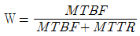
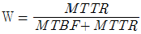
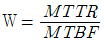
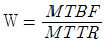
(정답률: 10%)
39. Ethernet에서 사용되는 매체 액세스 프로토콜은?
- Polling
- Token Bus
- CSMA/CD
- 동기 ALOHA
(정답률: 55%)
40. 정보처리 시스템에서 H/W와 S/W가 갖추어야 할 기본적인 기능은?
- 다수의 단말장치로부터 CPU의 시분할 사용이 가능한 기능
- 데이터링크의 확립, 상대감시, 링크의 개방기능
- 데이터 전송제어의 기능
- 메시지 교환, 전문 해석, 번호처리기능
(정답률: 알수없음)
3과목: 정보통신 기기
41. 다음 중 multimedia 의 환경으로 제공되어야 할 기술과 거리가 가장 먼 것은?
- 실시간의 고속통신
- 대용량의 저장장치
- 다양한 입,출력장치
- 다중작업 처리장치
(정답률: 알수없음)
42. 교환회선 전송제어장치는 입출력 제어부, 회선 제어부, 회선 접속부로 구성된다. 다음 중 회선 접속부의 기능은?
- 오류 검출 부호 생성
- 송수신데이터 기억
- 전송 제어 문자 식별
- 변복조 인터페이스 제어
(정답률: 19%)
43. 다음중 팩시밀리의 ITU-T표준규격에 대한 설명이다. 틀린 것은 어느 것인가?
- G1과 G2는 아날로그 신호방식이다.
- G4는 ISDN에 사용된다.
- G1과 G2의 수직주사선 밀도는 3.85[선/㎜] 이다.
- G3과 G4의 수직주사선 밀도는 8.87[선/㎜] 이다.
(정답률: 알수없음)
44. 다음중 역 다중화기의 특징이 아닌 것은?
- 광대역 회선을 사용하지 않고 두 개의 음성대역 회선을 이용한다.
- 집중화기라고도 한다.
- 시분할 다중화기의 역 동작을 수행한다.
- 한 채널의 고장시 나머지 한채널은 1/2의 속도로 계속 운영이 가능하다.
(정답률: 알수없음)
45. 완충증폭기에 대한 설명중 옳지 않은 것은?
- 발진회로와 부하간을 격리한다.
- 부하변동의 영향을 막기 위하여 설치한다.
- 발진기의 발진주파수를 안정시키기 위해 설치한다.
- 발진기 다음단에 설치하며, 효율은 체배증폭기 보다 높다.
(정답률: 알수없음)
46. 두 선으로 연결된 통신선로 상에 1-2M bps 하향 데이터와 16kbps의 하향 통신을 하도록 지원하는 ADSL(비대칭 디지털 가입자선) 단말기에서 상향 데이터와 하향 데이터를 구분해주는 단말기 구성부는?
- 반향 제거기
- 시분할 분석기
- 파장 다중화기
- 코드 분할 다중화기
(정답률: 알수없음)
47. 다음 중 위성통신 시스템에서 위성중계기의 신호 증폭부가 갖추어야 할 조건이 아닌 것은?
- 높은 신뢰성
- 우수한 효율
- 경량화
- 협대역
(정답률: 알수없음)
48. 텔레텍스트의 미디어 기본특성이 아닌 것은?
- 쌍방향 통신
- 축적정보량이 적음
- 다수 수신자가 동시접속
- 단방향 동시분배
(정답률: 알수없음)
49. CATV 시스템 기본 구성 중에 분배선으로부터 가입자가 들어오는 인입선에 신호를 송출하는 장치는 무엇인가?
- 헤드 엔드
- 간선 분기 증폭기
- 탭오프
- 분기 증폭기
(정답률: 알수없음)
50. 다음 중 CCTV의 설치와 관계가 먼 것은?
- CCTV를 아파트에서 난시청해소용으로 설치하였다.
- CCTV를 지하철에 설치하였다.
- CCTV를 은행금고에 설치하였다.
- CCTV를 범죄발생률이 높은 지역에 설치하였다.
(정답률: 80%)
51. 다음 중 디지털 전송장비의 클럭(clock) 공급방식이 아닌 것은?
- 자체 클럭 공급방식
- 수신 클럭 공급방식
- 외부 클럭 공급방식
- 제어 클럭 공급방식
(정답률: 알수없음)
52. 지구극 안테나빔을 항상 통신위성의 방향으로 향하게 하는 장치는?
- 구체계장치
- 자세제어계
- 어포지(apogee)모터
- 추미장치
(정답률: 알수없음)
53. 다음 중 터미널과 데이터전송회선을 연결해 주는 부분으로써 터미널 내부의 전기적 신호레벨과의 상호변환의 역할을 하는 것은?
- 입력장치부
- 회선접속부
- 회선제어부
- 입출력제어부
(정답률: 70%)
54. 전전자 교환기에서 디지털 스위칭의 장점이 아닌 것은?
- 교환망에 의한 손실이 없다.
- 잡음을 방지한다.
- 전송방식을 PCM방식으로 유도한다.
- 교환점은 공간분할 스위칭에 비해 많다.
(정답률: 알수없음)
55. 다음은 푸시버튼 전화의 기능과 특성에 대한 설명이다. 옳지 않은 것은?
- 1개의 임펄스 숫자는 종횡 2개의 음성 대역내 주파수에 대응된다.
- 데이터 전송용 또는 원격제어용에도 사용할 수 있다.
- 2개의 LG동조회로로 구성된 주파수 발진회로가 있다.
- 저역군 3주파수와 고역군 3주파수와의 2개의 주파수대를 조합하여 선택신호를 구성한다.
(정답률: 알수없음)
56. 다음중 포트공동이용기가 위치할 곳은?
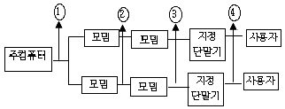
- ①
- ②
- ③
- ④
(정답률: 알수없음)
57. 회선을 보유하거나 임차하여 정보의 축적, 가공, 변환하여 광범위한 서비스를 제공하는 것은?
- LAN
- VAN
- CATV
- ISDN
(정답률: 40%)
58. 다음 설명에 해당되는 단말의 표시장치는?
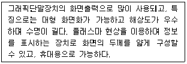
- LCD
- CRT
- PDP
- EC
(정답률: 알수없음)
59. 컴퓨터 출력을 마이크로 필름에 기록하는 장치인 COM의 특징이 아닌 것은?
- 처리속도가 빠르다.
- 용량이 매우 크다.
- 오픈 루프형, 스텐드얼론형, 크로즈 루프형 등이 있다.
- 외형상으로 저장 및 처리부분, 카메라 부분 및 CRT부분 등으로 구성된다.
(정답률: 알수없음)
60. 세계위성통신을 행하기 위해서 제안된 세 가지 통신위성 방식이 아닌 것은?
- 이동위성방식
- 정지위성방식
- 위상위성방식
- Random위성방식
(정답률: 알수없음)
4과목: 정보전송 공학
61. 광통신 케이블에 대한 특징이 아닌 것은?
- 무전도성이다.
- 내화성이 강하다.
- 가볍다.
- 광대역 통신에 적합하다.
(정답률: 19%)
62. 정보통신 시스템에서의 장애오류 검출에서 다중비트의 오류를 검출하고 정정할 수 있는 부호는?
- 고장마크부호
- 순회부호
- 잉여부호
- 패리티검사부호
(정답률: 알수없음)
63. 최고 주파수 fm으로 대역 제한된 신호를 표본화할 때 원신호를 재생하는데 필요한 최소한의 시간간격은 얼마인가?
- 1/0.5fm
- 1/fm
- 1/1.5fm
- 1/2fm
(정답률: 알수없음)
64. 수신한 마이크로파를 검파하여 Video신호로 만든 다음 증폭한 후 다시 마이크로파로 변조하여 송신하는 중계방식은?
- 헤테로다인 중계방식
- 4주파수 중계방식
- 검파중게방식
- 직접중계방식
(정답률: 알수없음)
65. 다중신호 si(t) = ai cos w ct + bi sin w ct의 ai, bi를 다중보호의 값으로 대응하는 변조기술은?
- AM
- FSK
- ASK
- APK
(정답률: 알수없음)
66. 광섬유 특징을 설명한 것이다. 연결이 옳은 것을 고르시오.
- 재료분산 - 광섬유 재료의 굴절율이 달라서 전파하는 광의 파형에 영향을 주어 파형이 넓게 되어 발생
- 구조분산 - 파장의 폭을 갖는 광펄스를 입사시키면 전파루트가 달라져 도달시간의 차가 발생
- 흡수손실 - 광섬유 주성분의 불순물 첨가에 의하여 빛의 파장에 영향
- 산란손실 - 빛이 아주 작은 물체 즉 분자에 부딪히면 사방으로 빛이 퍼져 손실을 발생
(정답률: 알수없음)
67. 다음 그림의 검파방식은 무엇이냐?
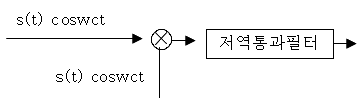
- ASK 동기검파
- FSK 비동기검파
- PSK 동기검파
- MSK 비동기파
(정답률: 알수없음)
68. ITU-T에서 권고한 다음신호방식중 공통선 선호 방식으로 전용 데이터 전송로를 필요로 하는 것은?
- R1
- R2
- NO.5
- NO.7
(정답률: 알수없음)
69. 시외 동선케이블의 심선수가 500쌍(pair)일 때 어떠한 구조로 결합되어 있는가?
- 성연
- 층연
- 쿼드연
- 유니트연
(정답률: 47%)
70. 다음 위상변조에 대한 기술중 올바른 것은?
- 위상은 주파수의 미분이다.
- 위상변조는 음성신호 전송에 적합하다.
- 위상편차를 크게하면 신호대 잡음비가 개선된다.
- 위상변조는 인접에 신호 간섭에 강하다.
(정답률: 9%)
71. 디지털 교환기의 시분할 다중화기는 입력단의 가입자선을 어느 속도의 디저털신호로 하여 하이웨이로 이용하는가?
- 1.544Mb/s
- 6.312Mb/s
- 8.192Mb/s
- 32Mb/s
(정답률: 알수없음)
72. 자동재전송요구(Automatic Retransmission Query)기법이 전진오류정정(Foreward Error Correction) 기법에 비교하여 갖는 장점을 올바르게 기술한 것은?
- 역방향 채널이 필요없다.
- 자동적으로 에러를 정정한다.
- 자동재전송요구 전략이 간단하다.
- 하드웨어가 간단하다.
(정답률: 알수없음)
73. 전체 n비트를 사용하는 코드에서 각 비트당 착오가 일어날 확률이 P이라면 수신된 코드에서 착오가 발생하지 않을 확률은?
- n×p
- pn
- (1-p)n
- n×(1-p)
(정답률: 알수없음)
74. 부호어(Codeword)의 전송 단계에서 1비트의 착오 (error)는 그 위치를 검출하여 교정 할 수 있으나 2비트의 착오는 착오 발생의 사실을 발견할 수 있는 블랙코드가 있다. 이때 부호어간의 최소 거리 (minimum distance)는 얼마인가?
- 2
- 3
- 4
- 5
(정답률: 알수없음)
75. 아날로그신호 ×(t)를 매 1초마다 샘플링한 후 델타변조하여 전송하려고 한다. 1×(t)1 ≦8일 때 샘플링된 신호당 전송되는 비트의 수는?
- 1
- 2
- 3
- 4
(정답률: 알수없음)
76. BSC(Binary Synchronous Communication)절차의 설명 중 틀린 것은?
- Loop방식으로만 사용가능하다.
- 반이중 통신방식을 사용한다.
- 완전한 오류검사가 어렵다.
- 사용코드에 제한이 있다.
(정답률: 알수없음)
77. 아날로그 방식의 라디오나 텔레비젼방송에 사용되고 컴퓨터 시스템에서 고속 데이터 전송에 적합한 통신 회선은?
- 나선케이블
- 동축 케이블
- 꼬임선
- 도파관
(정답률: 40%)
78. 통신속도가 300[BAUD]이고, 보오당 신호레벨이 4일 때 1분간의 송신 가능속도를 계산하시오.
- 4500[bps]
- 18000[bps]
- 36000[bps]
- 72000[bps]
(정답률: 알수없음)
79. HDLC전송제어 절차에서 사용되는 것의 설명과 맞는 것은?
- 균형구성 : 정상응답모드, 비동기응답모드
- 균형구성 : 비동기응답모드, 비동기 균형모드
- 불균형구성 : 정상응답모드, 비동기응답모드
- 불균형구성 : 비동기응답모드, 비동기 균형모드
(정답률: 10%)
80. 아날로그데이타를 디지털 신호로 변환시키고 다시 디지털 신호를 아날로그 데이터로 복구시키는 장치는?
- CODEC
- MODEM
- DSU
- VOCODER
(정답률: 42%)
5과목: 전자계산기일반 및 정보통신설비기준
81. 다음 중 정보통신공사의 하도급 제도를 올바르게 설명한 것은?
- 수급한 공사를 일괄하여 하도급할 수 있다.
- 하도급된 공사를 다시 하도급할 수 있다.
- 하도급 하고자 할 때에는 도급인에게 통지만 하면 된다.
- 하도급은 수급한 공사 중 그 일부만을 하도급할 수 있다.
(정답률: 60%)
82. 선로설비의 회선 상호간, 회선과 대지간 및 회선의 심선 상호간의 절연저항은 얼마이어야 하는가?
- 직류 50[V] 절연저항계로 측정하여 1[㏁] 이상
- 교류 50[V] 절연저항계로 측정하여 1[㏁] 이하
- 직류 500[V] 절연저항계로 측정하여 10[㏁] 이상
- 교류 500[V] 절연저항계로 측정하여 10[㏁] 이하
(정답률: 알수없음)
83. 다음 중 debugging과 관계가 적은 것은?
- coding
- single step
- trace
- dump
(정답률: 알수없음)
84. 정보통신공사업자가 아닌 자도 시공할 수 있는 공사는?
- 실험국의 무선설비 설치
- 유선방송시설 중 선로설비 설치
- 폐쇄회로 텔레비젼 설비 설치
- 래이다 설비 설치
(정답률: 알수없음)
85. 입출력 과정에서 CPU의 역할이 가장 큰 방식은?
- Programmed I/O
- Interrupt-Driver I/O
- DMA
- Channel I/O
(정답률: 알수없음)
86. 다음중 데이터 베이스의 특성에 속하지 않는 것은?
- 중복데이타 배제
- 비밀보호장치의 유지
- 데이터 상호간의 연결성
- 프로그램과 데이터의 종속성
(정답률: 알수없음)
87. 전기통신설비의 보호를 위한 금지 행위가 아닌 것은?
- 전기통신설비의 손괴 금지
- 전기통신 소통 방해 금지
- 전기통신설비의 대여 금지
- 전기통신설비의 기능 장애 금지
(정답률: 알수없음)
88. 다음 각 자료형 중에서 가장 적은 비트의 수를 필요로 하는 것은?
- 실수형 자료(real type)
- 정수형 자료(integer type)
- 문자형 자료(character type)
- 논리형 자료(boolean type)
(정답률: 알수없음)
89. 산술 및 논리연산의 결과를 일시 보관하는 레지스터는?
- Accumulator
- Storage 레지스터
- Arithmetic 레지스터
- Instruction 레지스터
(정답률: 60%)
90. 전자서명 공인 인증기관으로 지정받을 수 없는 자는?
- 국가기관
- 지방자치단체
- 법인
- 기간통신사업자
(정답률: 알수없음)
91. 정보통신 서비스의 제공에 사용되는 자동교환설비의 특성 임피던스는 몇[Ω]인가?
- 50
- 750
- 300
- 600
(정답률: 40%)
92. 데이터 전송기준의 측정 척도중 오율의 측정기준이 아닌 것은?
- 비트 오율
- 블록 오율
- 전신 왜율
- 트래픽 오율
(정답률: 알수없음)
93. 오퍼레이팅 시스템의 성능평가시 고려사항이 아닌 것은?
- 처리능력(Throughput)
- 응답시간(Turn Around Time)
- 편리성(Convenience)
- 사용가능도(Availability)
(정답률: 39%)
94. (011111100000)2의 값을 갖는 레지스터의 내용을 오른쪽으로 네 번 시프트 시켜다면 실제로 이 레지스터가 수행한 연산은 무엇인가?
- added –400
- multiplied by 4
- divided by 4
- divided by 16
(정답률: 알수없음)
95. 기간통신사업자가 전기통신역무에 관한 요금, 기타 이용조건을 정하여 정보통신부장관의 인가를 받은 것을 무엇이라 하는가?
- 시행규정
- 이용약관
- 시설기준
- 시행규칙
(정답률: 알수없음)
96. 16 kbyte의 주기억장치를 구성하려면 최소한 몇 개의 어드레스선이 필요한가?
- 10
- 12
- 14
- 16
(정답률: 알수없음)
97. 전기통신기재의 형식승인을 얻고자 하는 경우 누구에게 형식승인의 신청서와 형식승인 대상 전기통신기자재를 제출하여야 하는가?
- 기간통신사업자
- 한국정보통신기술협회장
- 전파연구소장
- 한국전자통신연구원장
(정답률: 알수없음)
98. 다음 중 보조기억장치의 특징이라 할 수없는장치는?
- 주기억장치에 비교해 가격이 저렴하다
- 기억내용을 안전하게 오래 보관할 수 있다
- 데이타를 읽는 속도가 주기억 장치보다 빠르다
- 기억용량을 주기억 장치보다 크게 할 수 있다
(정답률: 알수없음)
99. 다음 중 레지스터의 결과 값이 다른 것은? (단, A레지스터는 0×55 라는 값이 저장되어있다.)
- AND A, 0×00
- XOR A
- OR A, 0×00
- AND A, 0×AA
(정답률: 알수없음)
100. 전기통신사업의 종류가 알맞게 분류된 것은?
- 기간통신사업, 일반통신사업, 특정통신사업
- 일반통신사업, 특정통신사업, 별정통신사업
- 기간통신사업, 정보통신사업, 별정통신사업
- 기간통신사업, 별정통신사업, 부가통신사업
(정답률: 알수없음)